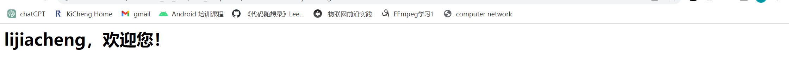
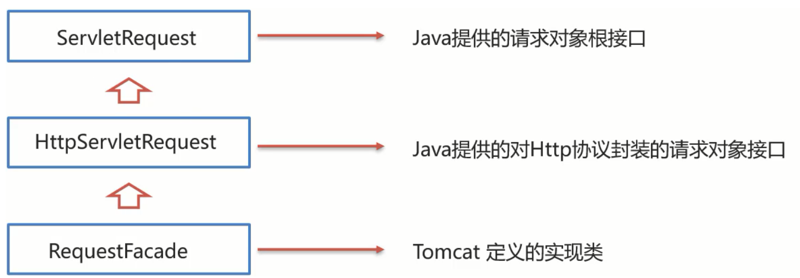
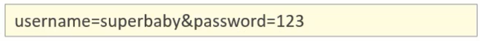
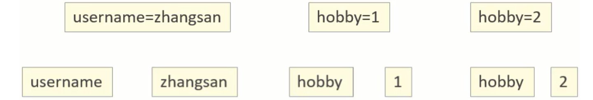
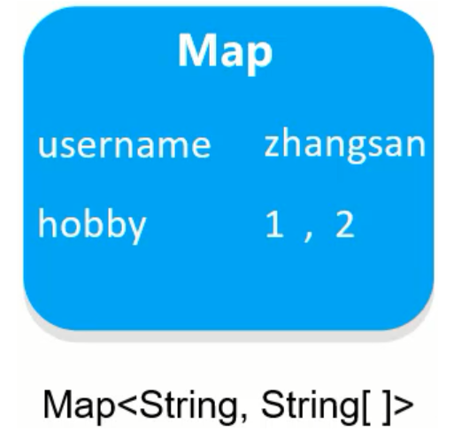
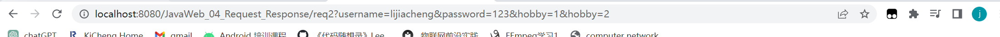
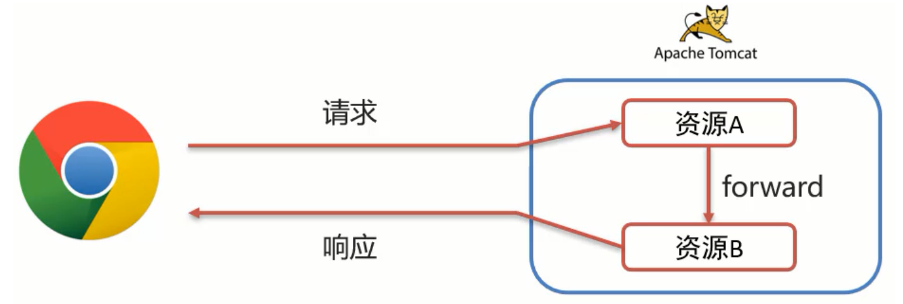
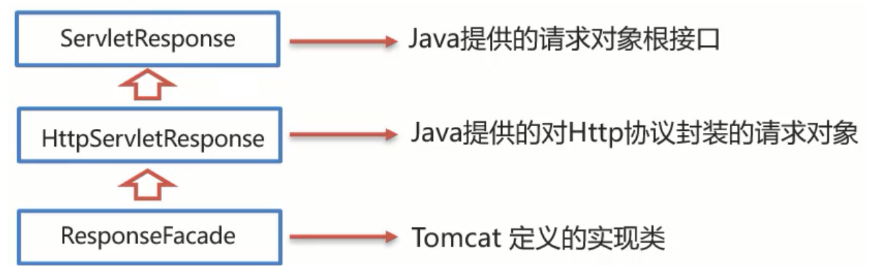
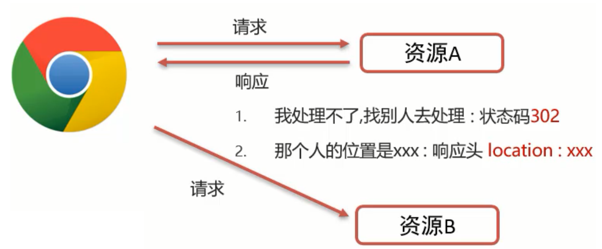
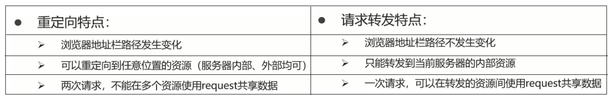

request和response对象代表请求和响应，那我们要获取客户机提交过来的数据，只需要找request对象就行；要向容器输出数据，只需要找response对象就行。
Resquest & Response
Request和Response的概述
Request是请求对象，Response是响应对象。这两个对象在我们使用Servlet的时候有看到：

- request：获取请求数据
- 浏览器会发送HTTP请求到后台服务器(Tomcat)
- HTTP的请求中会包含很多请求数据（请求行+请求头+请求体）
- 后台服务器(Tomcat)会对HTTP请求中的数据进行解析并把解析结果存入到一个对象中
- 所存入的对象即为request对象，所以我们可以从request对象中获取请求的相关参数
- 获取到数据后就可以继续后续的业务，比如获取用户名和密码就可以实现登录操作的相关业务
- response：设置响应数据
- 业务处理完后，后台就需要给前端返回业务处理的结果即响应数据
- 把响应数据封装到response对象中
- 后台服务器(Tomcat)会解析response对象,按照（响应行+响应头+响应体）格式拼接结果
- 浏览器最终解析结果，把内容展示在浏览器给用户浏览
1 |
|

request对象用来处理来自客户端的请求数据，比如接收请求参数等；responese对象根据接收的数据进一步设置发送给客户端的响应数据。
Request对象
Request继承体系
ServletRequest和HttpServletRequest都是Java提供的接口，接口无法创建对象。

这个时候，我们就需要用到Request继承体系中的RequestFacade：
- 该类实现了HttpServletRequest接口，也间接实现了ServletRequest接口；
- Servlet类中的service方法、doGet方法或者是doPost方法最终都是由Web服务器([Tomcat)来调用的，所以Tomcat提供了方法参数接口的具体实现类，并完成了对象的创建。
Tomcat（RequestFacade实现类）需要解析请求数据，封装为request对象,并且创建request对象传递到service方法
Request获取请求数据
获取请求行数据

- 获取请求方式:
GET
1 | String getMethod() |
- 获取虚拟目录(项目访问路径):
/JavaWeb_04_Request_Response
1 | String getContextPath() |
- 获取URL(统一资源定位符):
http://localhost:8080/JavaWeb_04_Request_Response/req1
1 | StringBuffer getRequestURL() |
- 获取URI(统一资源标识符):
/JavaWeb_04_Request_Response/req1
1 | String getRequestURI() |
- 获取请求参数**(GET方式)**:
username=zhangsan&password=123
1 | String getQueryString() |
由上到下依次获取的结果：

获取请求头数据
根据请求头名称获取对应值的方法为：
1 | String getHeader(String key) |
获取请求体数据
浏览器在发送GET请求的时候是没有请求体的，所以需要把请求方式变更为POST，请求体中的数据格式如下：
请求体中的数据，Request对象提供了如下两种方式来获取其中的数据，分别是：
获取字节输入流，如果前端发送的是字节数据，比如传递的是文件数据，则使用该方法：
1
ServletInputStream getInputStream()
获取字符输入流，如果前端发送的是纯文本数据，则使用该方法：
1
BufferedReader getReader()
在req.html中创建form表单传递请求参数，获取字符输入流读取数据：
1 |
|
获取到的POST方法的请求体数据：

获取请求参数的通用方式
请求数据则是包含请求行、请求头和请求体的所有数据。请求参数和请求数据的关系：请求参数是请求数据中的部分内容；如果是GET请求，请求参数在请求行中；如果是POST请求，请求参数一般在请求体中。
GET请求方式和POST请求方式区别主要在于获取请求参数的方式不一样，是否可以提供一种统一获取请求参数的方式，从而统一doGet和doPost方法内的代码?
request的方法中实现了如下操作：
（1）根据不同的请求方式获取请求参数，获取的内容如下:

（2）把获取到的内容进行分割：
（3）把分割后端数据，存入到一个Map集合中：
基于上述操作，request对象为我们提供了如下方法：
获取所有参数Map集合
1
Map<String,String[]> getParameterMap()
根据名称获取参数值（数组）
1
String[] getParameterValues(String name)
根据名称获取参数值（单个值）——使用频率比较高
1
String getParameter(String name)
下面进行获取请求参数的演示（后续使用的方法）：
（1）创建一个req.html的表单

1 | <form action="/JavaWeb_04_Request_Response/req2" method="get"> |
（2）在Servlet代码中获取页面传递请求的参数值
1 |
|
GET方式传递请求参数：

后端接收到的GET方式的请求参数：

剩下两个getParameterValues()和getParameter()一个return类型是String[]，一个return类型是String，按需使用即可，这里就不展示了。
在传递POST请求的参数也如上述所示，只需要修改前端表单的请求类型为POST即可，在Servlet类的doPost()里只需要：
1 | this.doGet(req,resp); |
请求参数中文乱码问题
不管是GET还是POST请求，在发送的请求参数中如果有中文，在后台接收的时候，都会出现中文乱码的问题。
POST请求解决方案
分析出现中文乱码的原因：
- POST的请求参数是通过request的getReader()来获取流中的数据
- TOMCAT在获取流的时候采用的编码是ISO-8859-1
- ISO-8859-1编码是不支持中文的，所以会出现乱码
解决方案：
1
request.setCharacterEncoding("UTF-8");
但这种方式不适用于GET请求。
GET请求解决方案
request.setCharacterEncoding("utf-8")是设置request处理流的编码，但是GET获取请求参数的方式是request.getQueryString()，它并没有通过流的方式获取参数。
先分析一下GET请求出现乱码的原因：

(1)浏览器通过HTTP协议发送请求和数据给后台服务器(Tomcat)
(2)浏览器在发送HTTP的过程中会对中文数据进行URL编码
(3)在进行URL编码的时候会采用页面<meta>标签指定的UTF-8的方式进行编码，“张三”编码后的结果为”%E5%BC%A0%E4%B8%89“
(4)后台服务器(Tomcat)接收到%E5%BC%A0%E4%B8%89后会默认按照ISO-8859-1进行URL解码
(5)由于前后编码与解码采用的格式不一样，就会导致后台获取到的数据为乱码。
关于URL编解码，Java中已经为我们提供了编码和解码的API工具类可以让我们更快速的进行编码和解码：
1 | java.net.URLEncoder.encode("需要被编码的内容","字符集(UTF-8)") // encode |
1 | java.net.URLDecoder.decode("需要被解码的内容","字符集(UTF-8)") // decode |
我们可以发现：在进行编码和解码的时候，不管使用的是哪个字符集，他们对应的%E5%BC%A0%E4%B8%89是一致的，所以具体的解决方案为：① 按照ISO-8859-1编码获取乱码å¼ ä¸对应的字节数组；② 按照UTF-8编码获取字节数组对应的字符串。
Tomcat8.0之后，已将GET请求乱码问题解决，设置默认的解码方式为UTF-8。
Request请求转发
请求转发(forward)是一种在服务器内部的资源跳转方式。
(1)浏览器发送请求给服务器，服务器中对应的资源A接收到请求；
(2)资源A处理完请求后将请求发给资源B；
(3)资源B处理完后将结果响应给浏览器；
(4)请求从资源A到资源B的过程就叫请求转发。
请求转发的实现方式
1 | req.getRequestDispatcher("资源B路径").forward(req,resp); |
请求转发资源间共享数据
需要使用request对象提供的三个方法：
- 存储数据到request域[范围,数据是存储在request对象]中
1 | void setAttribute(String name,Object o); |
- 根据key获取值
1 | Object getAttribute(String name); |
- 根据key删除该键值对
1 | void removeAttribute(String name); |
请求转发的特点
浏览器地址栏路径不发生变化：虽然后台从
/req3转发到/req4,但是浏览器的地址一直是/req4，未发生变化只能转发到当前服务器的内部资源：不能从一个服务器通过转发访问另一台服务器
一次请求，可以在转发资源间使用request共享数据：虽然后台从
/req3转发到/req4`，但是这个只有一次请求
Response对象
Response继承体系
Response设置响应数据
- 响应行
对于响应头，比较常用的就是设置响应状态码：
1 | void setStatus(int sc); |
- 响应头
设置响应头键值对：
1 | void setHeader(String name,String value); |
- 响应体
对于响应体，是通过字符、字节输出流的方式往浏览器写。
获取字符输出流：
1 | PrintWriter getWriter(); |
获取字节输出流：
1 | ServletOutputStream getOutputStream(); |
Response请求重定向
Response重定向(redirect)是另一种资源跳转方式。
(1)浏览器发送请求给服务器，服务器中对应的资源A接收到请求；
(2)资源A现在无法处理该请求，就会给浏览器响应一个302状态码和location一个访问资源B的路径；
(3)浏览器接收到响应状态码为302就会重新发送请求到location对应的访问地址去访问资源B；
(4)资源B接收到请求后进行处理并最终给浏览器响应结果，这整个过程就叫重定向。
重定向实现方式
1 | resposne.setStatus(302); |
或者用简化后的一行代码：
1 | resposne.sendRedirect("/JavaWeb_04_Request_Response/resp2") |
重定向的特点
浏览器地址栏路径发送变化：当进行重定向访问的时候，由于是由浏览器发送的两次请求，所以地址会发生变化；
可以重定向到任何位置的资源（服务内容、外部均可）：因为第一次响应结果中包含了浏览器下次要跳转的路径，所以这个路径是可以任意位置资源；
两次请求，不能在多个资源使用request共享数据：因为浏览器发送了两次请求，是两个不同的request对象，就无法通过request对象进行共享数据。
请求转发和重定向的比较：

什么时候用项目访问路径，什么时候不需要？
判断的依据很简单，只需要记住下面的规则即可:
- 浏览器使用：需要加虚拟目录(项目访问路径)
- 服务端使用：不需要加虚拟目录
对于请求转发来说，因为是在服务端进行的，所以不需要加虚拟目录；对于重定向来说，路径最终是由浏览器来发送请求，就需要添加虚拟目录。同时，由于虚拟目录的项目路径是硬编码的，如果后期通过Tomcat插件配置了项目的访问路径，那么所有需要重定向的地方都需要重新修改。可以在使用虚拟目录时动态配置，降低代码的耦合度：
1 | String contextPath = request.getContextPath(); |
Response响应字符数据
要想将字符数据写回到浏览器，我们需要两个步骤：
通过Response对象获取字符输出流：
1
PrintWriter writer = resp.getWriter();
通过字符输出流写数据：
1
writer.write("aaa");
在之前要记得设置服务器发送给浏览器的数据类型和数据编码格式：
1 | response.setContentType("text/html;charset=utf-8"); |
response.setContentType("text/html;charset=utf-8");等于response.setHeader("content-type", "text/html");和response.setCharacterEncoding("utf-8");两句。
一次请求响应结束后，response对象就会被销毁掉，所以不要手动关闭流。
Response响应字节数据
要想将字节数据写回到浏览器，我们需要两个步骤：
通过Response对象获取字节输出流：
1
ServletOutputStream outputStream = resp.getOutputStream();
通过字节输出流写数据：
1
outputStream.write(字节数据);
实现方式1
1 |
|
实现方式2
我们可以使用别人提供好的方法来简化代码的开发，具体的步骤是：
（1）pom.xml添加依赖
1 | <dependency> |
（2）调用工具类方法
1 | IOUtils.copy(fis,os); // fis:输入流 os:输出流 |
优化后的实现方式：
1 |
|